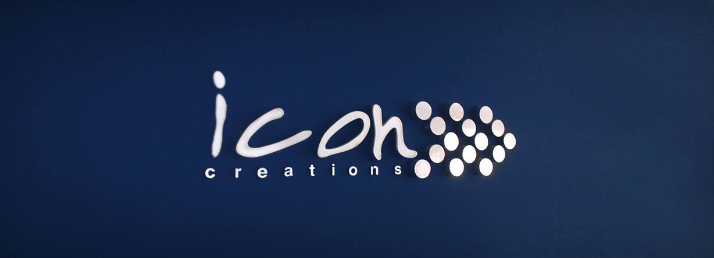

Our Latest News
January 30, 2022 by Daily News Egypt
Daily News Egypt Interviews Founder of Icon Creations
Check out an interview with Ali Shaaban, founder of Icon Creations and digital entrepreneur since 2003. Discover his journey of how he established Icon Creations and transformed it into the full-service digital agency it is today, the challenges he faced, his advice for young entrepreneurs and his vision for the future of digital.
See More